Authors: Jozef Kačmarčík, Zuzana Pribulová, Yevhen Petrenko, Gabriel Kuderowicz, Paweł Wójcik, Michał J. Winiarski, Szymon M. Królak, Filip Košuth, Pavol Szabó, Tomasz Klimczuk, Bartlomiej Wiendlocha, Peter Samuely
Type: both · Category: other · PDF: https://arxiv.org/pdf/2609.21845v1
Analysis basis: full PDF text, analyzed in chunks
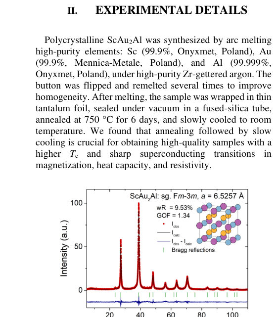
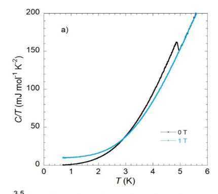
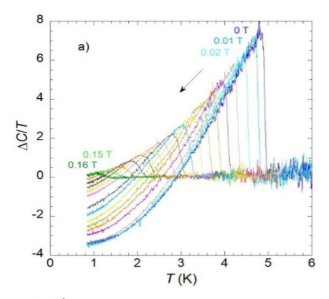
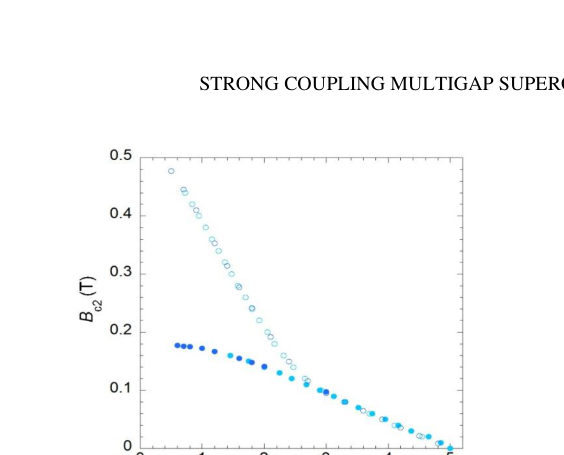
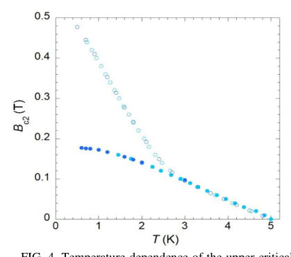
Summary. This paper characterizes the superconductivity in the Heusler compound ScAu2Al, confirming it is a strong-coupling, multigap superconductor using calorimetry and transport measurements. The findings are supported by first-principles calculations, which help explain the observed superconducting gaps and the difference between the bulk and resistive upper critical fields.
Why it may be interesting. While focused on conventional BCS-like superconductivity, the strong-coupling nature, multigap structure, and the detailed analysis of critical field discrepancies (bulk vs. grain boundary) provide rich material for understanding complex many-body interactions in condensed matter systems.
Main problem. The study investigates the nature of superconductivity in the Heusler compound ScAu2Al, specifically determining if it exhibits strong-coupling and multigap characteristics.
Main result. The material is established as a strong-coupling, multigap superconductor, with evidence pointing to distinct superconducting gaps and a significant discrepancy between bulk and resistive critical fields.
Method. The research combines high-resolution ac calorimetry and electrical transport measurements with first-principles Eliashberg calculations.
Model / system. The physical system is the Heusler superconductor ScAu2Al. The analysis utilizes models ranging from BCS theory to two-gap descriptions, supported by Eliashberg theory calculations.
Key observables. Specific-heat jump (ΔC/γ_nT_c), electron-phonon coupling constant (λ), superconducting gap ratios (2Δ/k_B T_c), and the upper critical field (B_c2).
Important parameters / regimes. Tc ≈ 4.95 K; Strong coupling indicators: ΔC/γ_nT_c = 2.2 (> 1.43); λ ≈ 1.1.
Assumptions / limitations. The discrepancy between the thermodynamic B_c2 (calorimetric) and the resistive B_c2 is attributed to superconductivity occurring in a percolating network of disordered grain boundaries and interfaces.
Figures summary. Figures show phase purity (PXRD), specific heat vs. T and B (comparing BCS, single-gap, and two-gap fits), and superconducting transition curves vs. B (comparing calorimetric and resistive measurements).
Paper structure. The paper proceeds by presenting multiple experimental diagnostics (calorimetry, transport) to characterize the superconducting state, confirming strong coupling and multigap behavior, and then using first-principles calculations to support and interpret the observed parameters like λ and B_c2.
ScAu$_2$Al is the Heusler superconductor with the highest reported transition temperature, Tc, close to 5 K. Here, we combine high-resolution ac calorimetry and electrical-transport measurements with first-principles-based Eliashberg calculations. The large specific-heat jump, $ΔC/{γ_nT_c} =$ 2.2, well above the weak-coupling BCS value of 1.43, together with an electron-phonon coupling constant $λ = $1.1, establishes ScAu2Al as a strong-coupling superconductor. The electronic specific heat is described better by a two-gap α model, with $2Δ_S/k_BT_c = $ 4.1 and $2Δ_L/k_BT_c = $ 4.8, than by a single-gap model. The thermodynamic upper critical field follows a conventional WHH-like temperature dependence with $B_{c2}(0) = 0.18$ T, whereas the resistively determined critical field reaches values about three times larger and exhibits a pronounced positive curvature. We attribute the enhanced resistive field scale to superconductivity in disordered grain-boundary and interfacial regions. The experimental results are supported by calculations of the heat capacity and upper critical field within the Eliashberg formalism using Fermi-surface and electron-phonon parameters obtained from first-principles calculations
Authors: Ivana Curci, Gregoire Jullien, Luc Maurice, Fabien Eozenou, Patrick Sahuquet, Thomas Proslier
Type: both · Category: other · PDF: https://arxiv.org/pdf/2609.21865v1
Analysis basis: full PDF text, analyzed in chunks
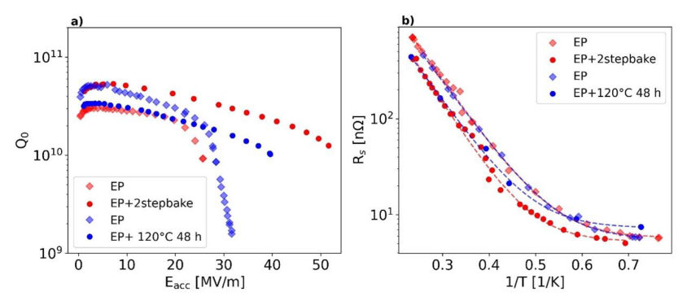
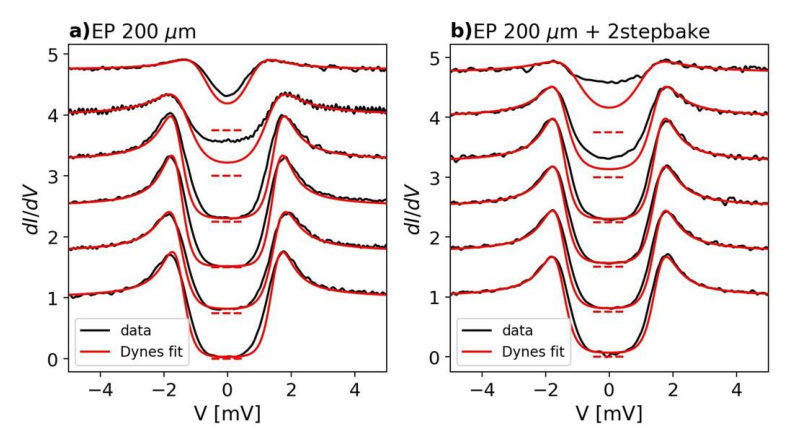
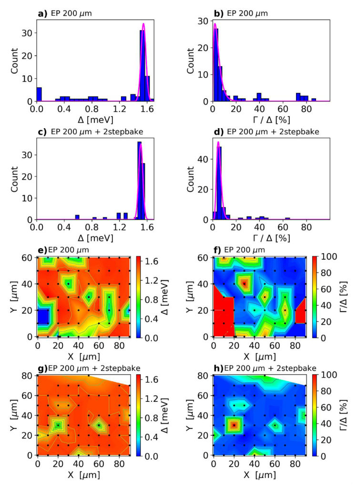
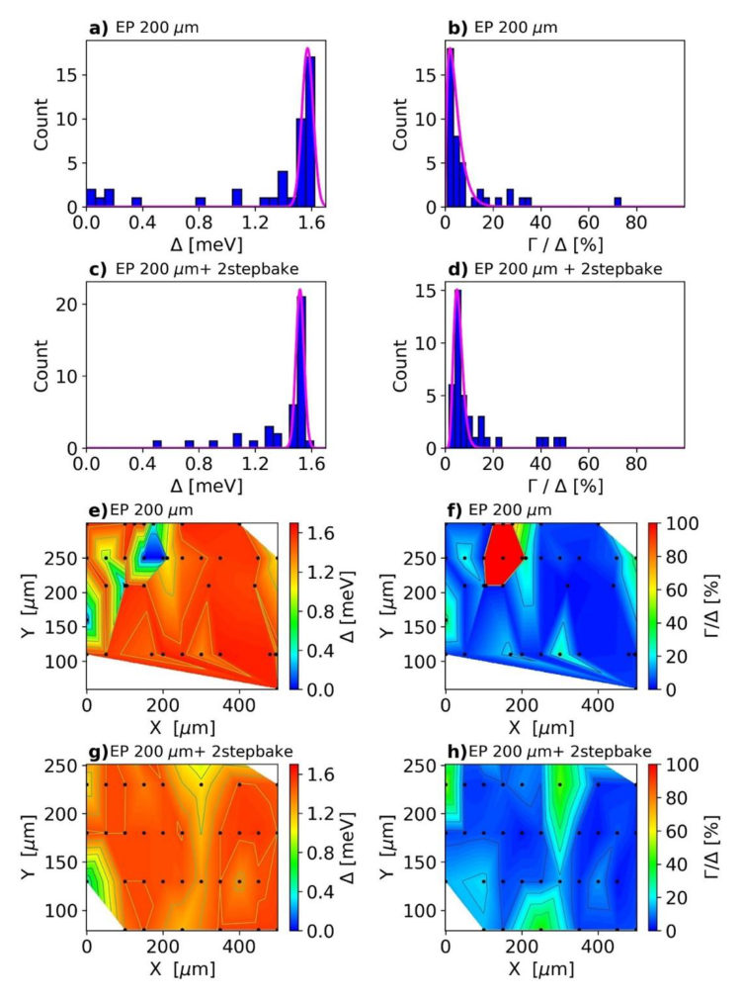
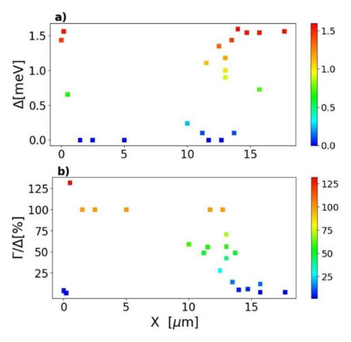
Summary. This work uses tunneling spectroscopy to examine how surface treatments affect the superconducting gap in niobium used for RF cavities. The key finding is that low-temperature baking effectively eliminates localized superconducting defects (minigaps) linked to hydride formation. This microscopic suppression of defects correlates directly with improved macroscopic RF performance, suggesting a clear path to optimizing superconducting materials.
Why it may be interesting. The direct link established between nanoscale superconducting defects (minigaps) and macroscopic device failure (HFQS) provides a powerful, measurable diagnostic tool for understanding superconducting material limitations.
Main problem. To microscopically understand the mechanisms limiting the performance of Superconducting Radio-Frequency (SRF) cavities by studying the local superconducting properties of niobium.
Main result. Low-temperature baking treatments significantly suppress regions of degraded surface superconductivity (minigaps), providing direct evidence that these localized defects limit high-field performance.
Method. The study combines Point-Contact Tunneling (PCT) spectroscopy to probe local superconducting gaps with macroscopic RF measurements of surface resistance and quench fields.
Model / system. The physical system is cavity-grade niobium (Nb) used in SRF cavities. Analysis involves using the Usadel proximity-effect model to describe minigaps caused by coupling to normal regions, attributed to hydride formation.
Key observables. Superconducting energy gap (Delta), fraction of minigaps, residual resistance (R_res), and the onset field of high-field quench (E_onset).
Important parameters / regimes. Baking temperatures ($120^\circ ext{C}$, two-step bake), critical current density, and the characteristic size of proximity-effect regions ($\sim 10$ nm).
Assumptions / limitations. The superconducting degradation is modeled as a proximity effect due to normal regions, which are linked to hydride formation during surface treatments.
Figures summary. Figures show the reduction of minigap fractions after baking, and plots correlate the fraction of minigaps with the decrease in the high-field quench onset field (E_onset).
Paper structure. The paper systematically compares EP samples to baked samples using PCT spectroscopy to quantify minigaps, then correlates these microscopic findings (minigap fraction, $\Gamma/\Delta$) with macroscopic RF performance metrics ($R_s$, $E_{ ext{onset}}$).
Point-contact tunneling (PCT) spectroscopy was used to probe the local superconducting properties of cavity-grade niobium following surface treatments representative of superconducting radio-frequency (SRF) cavities. Electropolished (EP) samples were compared with samples baked at 120~$^\circ$C for 48 h and subjected to a two-step bake at 75~$^\circ$C for 2 h followed by 120~$^\circ$C for 48 h. Although the superconducting gap $Δ$ is predominantly distributed around the bulk Nb value (~1.5 meV), regions exhibiting strongly suppressed gaps (minigaps) are observed in 15--29% of junctions on EP samples. Their occurrence decreases to 6% after the 120~$^\circ$C bake and to only 1% after the two-step treatment. Spectra exhibiting minigaps are well described by the Usadel proximity-effect model, consistent with superconducting Nb coupled to normal regions that we attribute to hydride formation. These results provide direct microscopic evidence that low-temperature baking suppresses regions of degraded surface superconductivity in cavity-grade Nb. The pronounced reduction achieved by the two-step bake further supports a link between hydride-related proximity effects and the surface superconducting properties governing SRF cavity performance.
Authors: Baishun Yang, Yida Chu, Xuelei Sui, Haiqing Lin, Shijie Hu, Bing Huang
Type: theory · Category: strongly correlated electrons · PDF: https://arxiv.org/pdf/2609.21731v1
Analysis basis: full PDF text, analyzed in chunks
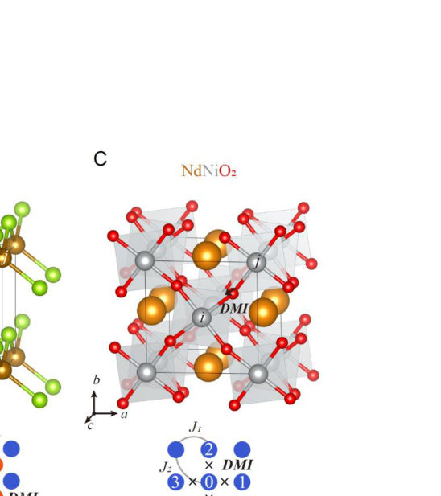
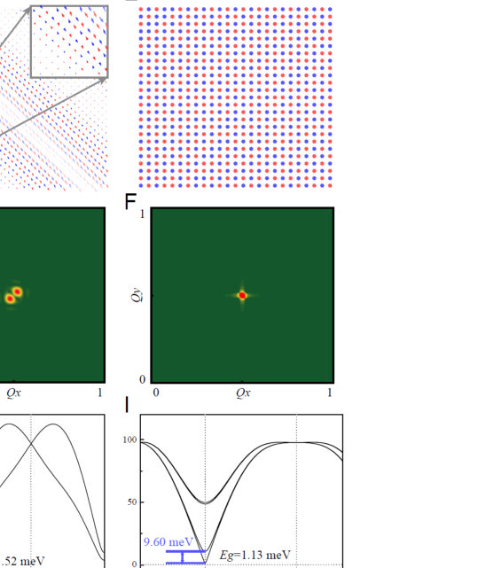
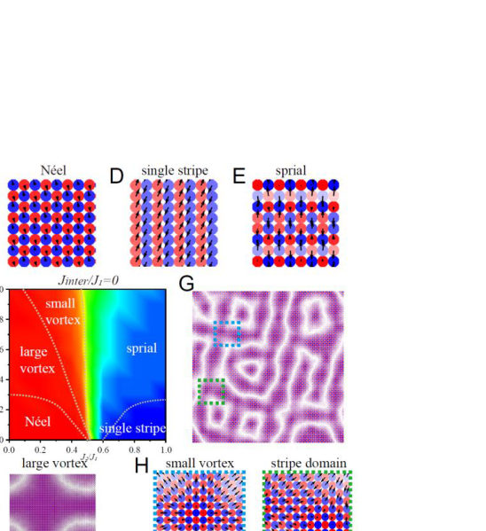
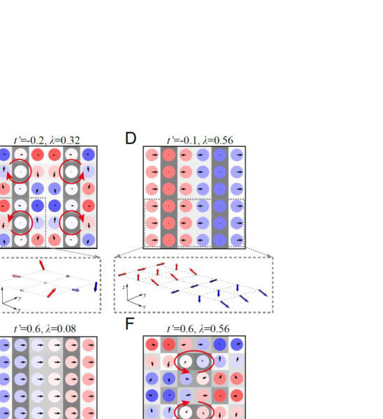
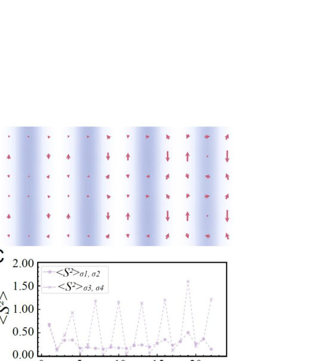
Summary. This work proposes that the Dzyaloshinskii-Moriya interaction (DMI) is the fundamental, unifying ingredient responsible for noncollinear magnetism in multiple families of unconventional superconductors. By simulating the interplay between DMI-driven spin vortices and charge stripes, the authors identify hole-stripe–vortex coupling as the key microscopic mechanism stabilizing superconductivity under hole doping.
Why it may be interesting. The detailed study of non-collinear spin textures and their interplay with charge order (CDW) and superconductivity provides a rich, complex many-body problem relevant to understanding exotic quantum states in correlated materials.
Main problem. The paper addresses the failure of the traditional collinear spin-fluctuation paradigm to explain unconventional superconductivity across diverse families like cuprates, iron-based superconductors, and nickelates.
Main result. The Dzyaloshinskii-Moriya interaction (DMI) is established as a universal link between noncollinear magnetism and superconductivity, suggesting hole-stripe–vortex coupling is the microscopic pairing engine.
Method. The study employs a combination of first-principles calculations, unbiased large-scale DMRG simulations, and Monte Carlo (MC) simulations to model spin textures and magnetic phases.
Model / system. The research focuses on unconventional superconductors (cuprates, pnictides, nickelates) modeled using spin Hamiltonians incorporating the DMI term, and sometimes the Rashba–Hubbard model.
Key observables. Incommensurate spin wave vectors ($\mathbf{Q}$), spin wave gaps, noncollinear spin textures (vortices, stripes), and superconducting correlations.
Important parameters / regimes. DMI strength ratio ($D_{ij}/J_1$), doping level (hole vs. electron), and various magnetic exchange couplings ($J_1, J_2, D$).
Assumptions / limitations. The analysis assumes that DMI, arising from local inversion-symmetry breaking, is the dominant non-collinear magnetic interaction governing the pairing mechanism.
Figures summary. Figures illustrate local symmetry breaking mechanisms (Fig. 1), spin textures and spectra for multiple materials (Fig. 2), magnetic phase diagrams showing vortex/stripe transitions (Fig. 3), and ground state phase diagrams for the Hubbard model (Fig. 4).
Paper structure. The paper progresses by first identifying the failure of existing models, then introducing DMI as the unifying ingredient via DFT/MC simulations across multiple material classes, detailing the doping dependence of the resulting vortex-stripe phases, and finally proposing the pairing mechanism.
The collinear-antiferromagnetic spin-fluctuation paradigm has long guided unconventional superconductivity research, yet fails to reconcile the noncollinear spin phenomena observed across cuprates, iron-based superconductors, and nickelates. Using extensive first-principles calculations and unbiased large-scale DMRG simulations, we show that Dzyaloshinski-Moriya interaction (DMI)-arising from local inversion-symmetry breaking-is a common ingredient across these families. This DMI unifies hallmark observations in parent compounds-incommensurate orders, spin-wave gaps, and noncollinear textures. Under hole doping, strong DMI drives spin vortices to merge with pi-shifted hole stripes, forming hybrid vortex-hole stripe phases. These phases stabilize charge order while supporting, not suppressing, superconductivity. By contrast, under electron doping, these vortices pin holes and suppress long-range superconductivity. Our results establish DMI as a unifying link between noncollinear magnetism and superconductivity, identifying hole-strip-vortex coupling as a microscopic pairing engine. Given that DMI is common across major superconductor families, these findings challenge the prevailing pairing mechanism and offer an experimentally testable roadmap for materials optimization.